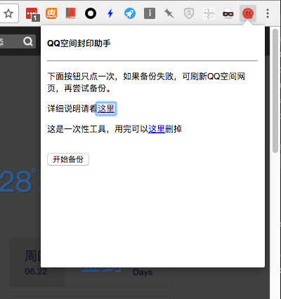
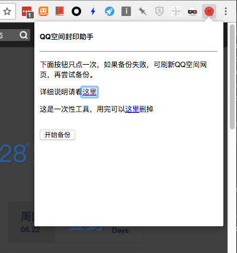

安装好这个插件后，打开 qzone.com，登录后，那个有「封」字的图标就会亮起来。

点击含「封」字的图标，再点「开始备份」，页面就会弹出提示正在备份，如果有很多日志和图片，可以先去泡杯茶。

备份过程中可能会出现错误，但最终如果一切还算正常，在提示备份完成的同时会在弹框的底部出现一个下载按钮，点击下载即可得到日志的备份

解压得到的备份，看看是否正常。
无法科学上网的同学可根据 这篇 说明来安装。
一个可以将自己QQ空间日志备份下来的 Chrome 插件。
每个互联网产品都有一个生命周期，或者你只会一段时间使用它。QQ空间的第一批用户已经越来越少使用QQ空间，假如有一天QQ号被盗，丢失找不回来，不想用了，那曾经写过的文字，拍过的照片就会留在网络上没人能看到的角落。
假如你觉得过去的尴尬文章还是需要Copy多一份，防止丢失，这个 Chrome 插件可以帮到你。
它可以把QQ空间的日志打包保存成一个压缩文件，解压后有如下目录结构
qzone-xxxxx (xxx 是QQ号）
|--- 说明.txt
└--- blog (日志)
└--- image (图片)
|--- 2007-01-01_00-00_xxxx-xxx-xx-xx (这是图片，可能是jpg，png，gif或webp格式）
|--- 2007-01-01_00-01_xxxx-xxx-xx-xx
└---- ....
|--- 2007-01-01_00-00-日志标题1.md (这是日志正文和评论，markdown格式，记事本也可以打开）
|--- 2007-01-01_00-01-日志标题2.md
|--- ...
└--- 2007-01-01_00-0n-日志标题n.md日志的内容类似这样，需要markdown编辑器才能看到图片。
# 标题
2007-01-01 12:00
正文正文正文
正文正文正文

还是正文还是正文
评论：
* 小A：Interesting
* 阿久：好嘢
* 小肥：哦啊哟
* X：[挖鼻屎]
* ... ...
使用过程中遇到错误，先看本文后面的「已知问题」。
Windows 推荐使用 MarkdownPad， MacOS 推荐使用 MacDown。
安装好这个插件后，打开 qzone.com，登录后，那个有「封」字的图标就会亮起来。

点击含「封」字的图标，再点「开始备份」，页面就会弹出提示正在备份，如果有很多日志和图片，可以先去泡杯茶。

备份过程中可能会出现错误，但最终如果一切还算正常，在提示备份完成的同时会在弹框的底部出现一个下载按钮，点击下载即可得到日志的备份
解压得到的备份，看看是否正常。